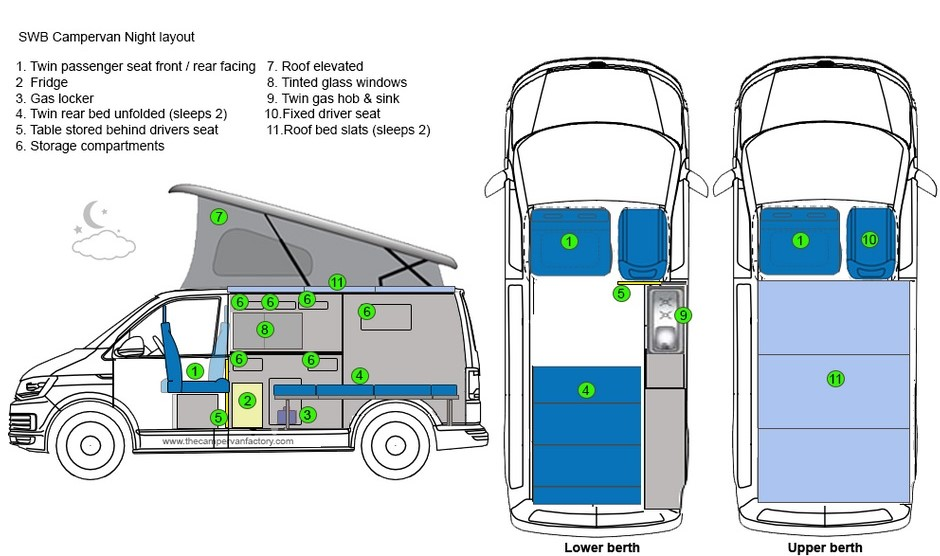
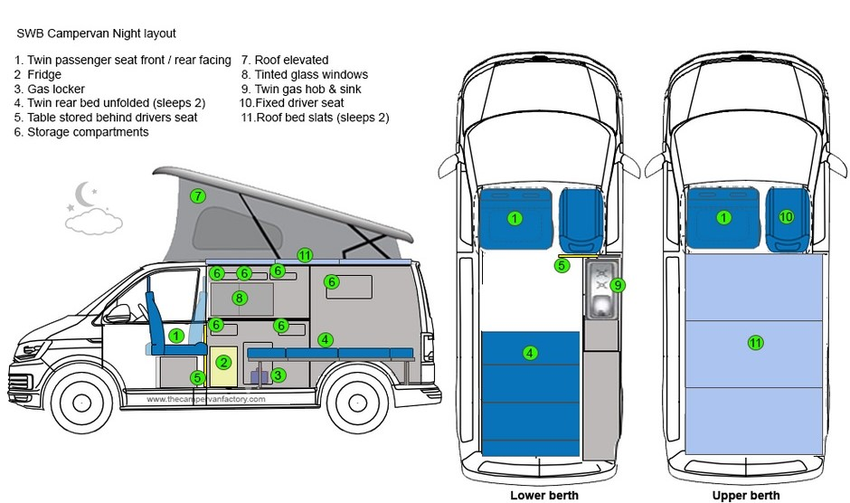

Just like it's namesake, our Picard conversion is iconic, no nonsense and practical. As avid campers, we designed this conversion with the goal of providing generous storage space without compromising usability. Key features include; double front seat swivel, sink, hob, fridge, split charge relay, leisure battery, electric hook point and crash tested rock-'n'-roll bed. Check out our video below for a demonstration of the key features.
We also offer a wide range of design choices to customise your new campervan. Upon providing a deposit you will be able to choose your unit and floor colour, as well as your worktop material. There is also an expansive list of optional extras such as towbars, awnings, rear headrests and bespoke lighting options. For a full list of design choices, options extras and pricing, head to the 'Contact' page to submit an enquiry form or grab directions to our workshop to drop in for a chat.
 
